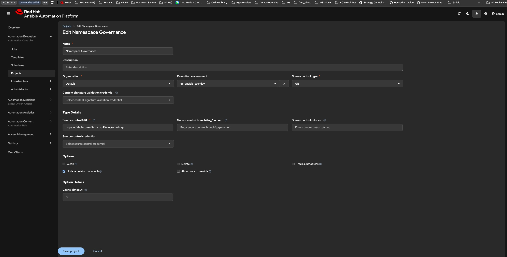
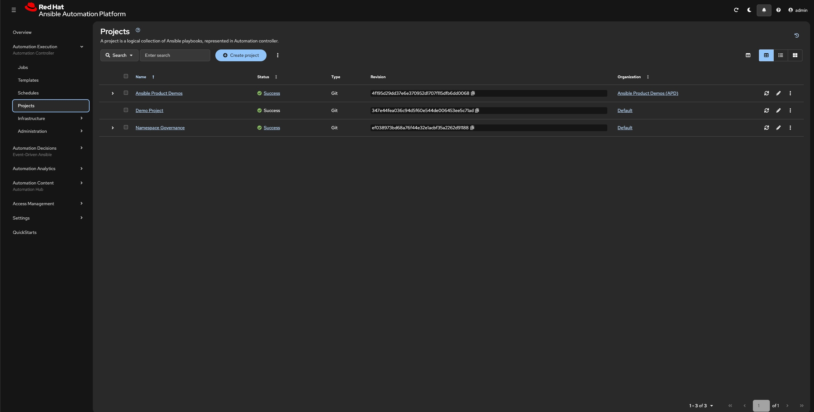
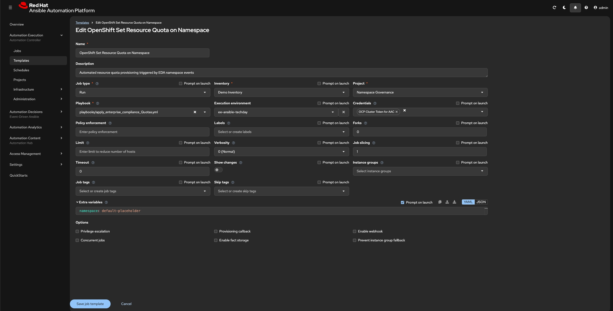
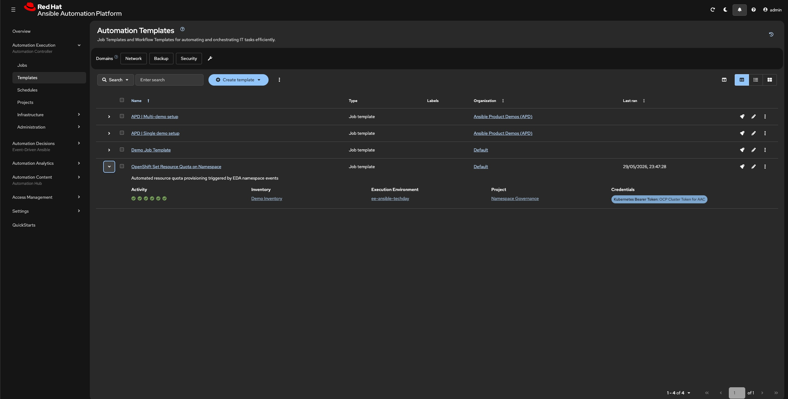
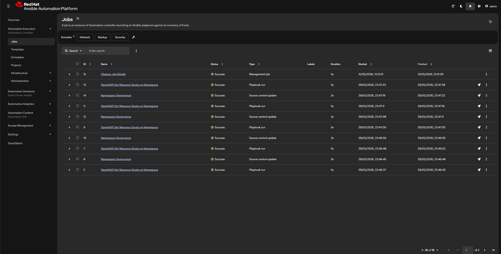

Automation Execution Project and Job Templates Definations¶
A Project in Automation Controller(AC) is a connection to a Git repository that contains your playbooks. AC syncs the repo and makes the playbooks available for Job Templates.
Prerequisites
Before you start you need:
1) The URL of your rulebooks Git repository.
2) If the repo is private — a Git credential (Personal Access Token).I have created a public repo for the workshop with a rulebook, that we will be using for the workshop.
repo url: https://github.com/niksharma20/custom-de.git
Projects¶
Creating a Project in Automation Controller (AC)
Step 1: Navigate to Projects
{kind=link}

Step3: Verify the sync (Success looks like below). 
{kind=link}
Automation Controller scans the repository and indexes all .yml playbook files. Your playbooks in the playbooks/ directory will appear as selectable options when creating Job Templates.
Job Templates¶
A Job Template defines what playbook to run, where to run it, and what credentials to use. EDA triggers these templates automatically when a rulebook rule fires.
Prerequisites
✅ Project (AAC Remediation Playbooks) — synced successfully
✅ Credential (OpenShift Cluster Token for AAC)
✅ Inventory — at minimum a localhost inventory (We will using "Demo Inventory", this should already be present)
Creating a Job Templates in Automation Controller
Step 1: Navigate to Job Templates
Name: OpenShift Set Resource Quota on Namespace
Job type: Run
Inventory: Demo Inventory
Project: Namespace Goverance
Playbook: playbooks/apply_enterprise_compliance_Quotas.yml (select from the drop down)
Credential(s): "OCP Cluster Token for AAC"
Execution environment: ee-ansible-techday
{kind=link}

Step3: Verify (Success looks like below). 
{kind=link}
Step4: If you would like to verify this right way. bext way is to go to your Openshift web terminal and run below command.
oc apply -f - <<EOF
apiVersion: project.openshift.io/v1
kind: Project
metadata:
name: eda-verification
labels:
type: eda
spec: {}
EOF
Similar to the images below
{kind=link}

{kind=link}
{kind=link}
{kind=link}
Congratulations!
You have successfully completed this module.
Congratulations!
You have successfully completed this section. Continue to the next page using the Next button below.